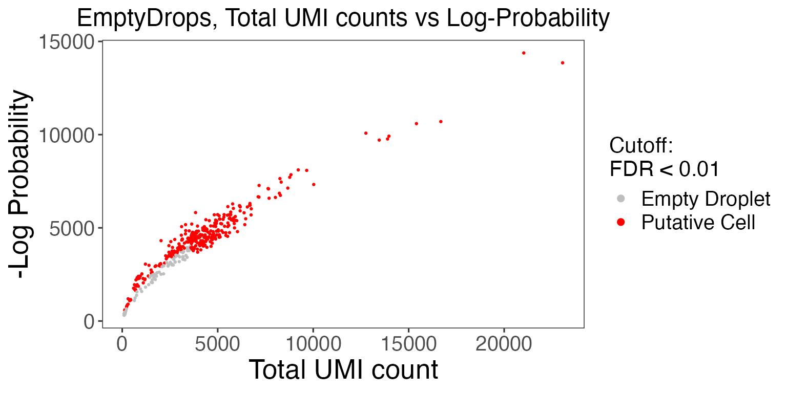

Introduction
Performing comprehensive quality control (QC) is necessary to remove poor quality cells for downstream analysis of single-cell RNA sequencing (scRNA-seq) data. Within droplet-based scRNA-seq data, droplets containing cells must be differentiated from empty droplets. Therefore, assessment of the data is required, for which various QC algorithms have been developed. In singleCellTK (SCTK), we have written convenience functions for several of these tools. In this guide, we will demonstrate how to use these functions to perform quality control on unfiltered, droplet data. (For definition of droplet data, please refer this documentation.)
The package can be loaded using the library() command.
Running QC on droplet raw data
Load PBMC4k data from 10X
SCTK takes in a SingleCellExperiment object from the SingleCellExperiment package. We will utilize the 10X PBMC 4K dataset as an example. For the QC of droplet-based counts data, we will install the dataset from the 10X Genomics website using the BiocFileCache package.
# Install BiocFileCache if is it not already
if (!requireNamespace("BiocFileCache", quietly = TRUE)) {
if (!requireNamespace("BiocManager", quietly = TRUE)) {
install.packages("BiocManager")
}
BiocManager::install("BiocFileCache")
}
library("BiocFileCache")
bfc <- BiocFileCache::BiocFileCache("raw_data", ask = FALSE)
raw.path <- bfcrpath(bfc, file.path(
"http://cf.10xgenomics.com/samples",
"cell-exp/2.1.0/pbmc4k/pbmc4k_raw_gene_bc_matrices.tar.gz"
))
untar(raw.path, exdir = file.path(tempdir(), "pbmc4k"))
fname <- file.path(tempdir(), "pbmc4k/raw_gene_bc_matrices/GRCh38")
pbmc4k.droplet <- DropletUtils::read10xCounts(fname, col.names = TRUE)
### change the sample column
names(colData(pbmc4k.droplet)) <- c("sample", "Barcode")
colData(pbmc4k.droplet)$sample <- rep("pbmc4k", ncol(colData(pbmc4k.droplet)))SCTK also supports the importing of single-cell data from the following platforms: 10X CellRanger, STARSolo, BUSTools, SEQC, DropEST, Alevin, as well as dataset already stored in SingleCellExperiment object and AnnData object. To load your own input data, please refer Function Reference for pre-processing tools under Console Analysis section in Import data into SCTK for detailed instruction.
runDropletQC
All droplet-based QC functions are able to be run under the wrapper function runDropletQC(). By default all possible QC algorithms will be run.
pbmc4k.droplet <- runDropletQC(pbmc4k.droplet)## Thu Apr 28 11:49:12 2022 ... Running 'perCellQCMetrics'## Thu Apr 28 11:49:13 2022 ... Running 'emptyDrops'## Thu Apr 28 11:49:39 2022 ... Running 'barcodeRanks'If users choose to only run a specific set of algorithms, they can specify which to run with the algorithms parameter.
After running QC functions with SCTK, the output will be stored in the colData slot of the SingleCellExperiment object.
## DataFrame with 5 rows and 16 columns
## sample Barcode sum detected
## <character> <character> <numeric> <integer>
## GAGCAGACACTAGTAC-1 pbmc4k GAGCAGACACTAGTAC-1 0 0
## GCACTCTGTAAAGGAG-1 pbmc4k GCACTCTGTAAAGGAG-1 5 5
## CTTTGCGAGAATCTCC-1 pbmc4k CTTTGCGAGAATCTCC-1 2 2
## CTGATAGAGGCCCGTT-1 pbmc4k CTGATAGAGGCCCGTT-1 23 23
## ACGAGCCGTCGCATCG-1 pbmc4k ACGAGCCGTCGCATCG-1 0 0
## percent.top_50 percent.top_100 percent.top_200
## <numeric> <numeric> <numeric>
## GAGCAGACACTAGTAC-1 NaN NaN NaN
## GCACTCTGTAAAGGAG-1 100 100 100
## CTTTGCGAGAATCTCC-1 100 100 100
## CTGATAGAGGCCCGTT-1 100 100 100
## ACGAGCCGTCGCATCG-1 NaN NaN NaN
## percent.top_500 total dropletUtils_emptyDrops_total
## <numeric> <numeric> <integer>
## GAGCAGACACTAGTAC-1 NaN 0 0
## GCACTCTGTAAAGGAG-1 100 5 5
## CTTTGCGAGAATCTCC-1 100 2 2
## CTGATAGAGGCCCGTT-1 100 23 23
## ACGAGCCGTCGCATCG-1 NaN 0 0
## dropletUtils_emptyDrops_logprob
## <numeric>
## GAGCAGACACTAGTAC-1 NA
## GCACTCTGTAAAGGAG-1 NA
## CTTTGCGAGAATCTCC-1 NA
## CTGATAGAGGCCCGTT-1 NA
## ACGAGCCGTCGCATCG-1 NA
## dropletUtils_emptyDrops_pvalue
## <numeric>
## GAGCAGACACTAGTAC-1 NA
## GCACTCTGTAAAGGAG-1 NA
## CTTTGCGAGAATCTCC-1 NA
## CTGATAGAGGCCCGTT-1 NA
## ACGAGCCGTCGCATCG-1 NA
## dropletUtils_emptyDrops_limited dropletUtils_emptyDrops_fdr
## <logical> <numeric>
## GAGCAGACACTAGTAC-1 NA NA
## GCACTCTGTAAAGGAG-1 NA NA
## CTTTGCGAGAATCTCC-1 NA NA
## CTGATAGAGGCCCGTT-1 NA NA
## ACGAGCCGTCGCATCG-1 NA NA
## dropletUtils_BarcodeRank_Knee
## <integer>
## GAGCAGACACTAGTAC-1 0
## GCACTCTGTAAAGGAG-1 0
## CTTTGCGAGAATCTCC-1 0
## CTGATAGAGGCCCGTT-1 0
## ACGAGCCGTCGCATCG-1 0
## dropletUtils_BarcodeRank_Inflection
## <integer>
## GAGCAGACACTAGTAC-1 0
## GCACTCTGTAAAGGAG-1 0
## CTTTGCGAGAATCTCC-1 0
## CTGATAGAGGCCCGTT-1 0
## ACGAGCCGTCGCATCG-1 0| sample | Barcode | sum | detected | percent.top_50 | percent.top_100 | percent.top_200 | percent.top_500 | total | dropletUtils_emptyDrops_total | dropletUtils_emptyDrops_logprob | dropletUtils_emptyDrops_pvalue | dropletUtils_emptyDrops_limited | dropletUtils_emptyDrops_fdr | dropletUtils_BarcodeRank_Knee | dropletUtils_BarcodeRank_Inflection | |
|---|---|---|---|---|---|---|---|---|---|---|---|---|---|---|---|---|
| GAGCAGACACTAGTAC-1 | pbmc4k | GAGCAGACACTAGTAC-1 | 0 | 0 | NaN | NaN | NaN | NaN | 0 | 0 | NA | NA | NA | NA | 0 | 0 |
| GCACTCTGTAAAGGAG-1 | pbmc4k | GCACTCTGTAAAGGAG-1 | 5 | 5 | 100 | 100 | 100 | 100 | 5 | 5 | NA | NA | NA | NA | 0 | 0 |
| CTTTGCGAGAATCTCC-1 | pbmc4k | CTTTGCGAGAATCTCC-1 | 2 | 2 | 100 | 100 | 100 | 100 | 2 | 2 | NA | NA | NA | NA | 0 | 0 |
| CTGATAGAGGCCCGTT-1 | pbmc4k | CTGATAGAGGCCCGTT-1 | 23 | 23 | 100 | 100 | 100 | 100 | 23 | 23 | NA | NA | NA | NA | 0 | 0 |
| ACGAGCCGTCGCATCG-1 | pbmc4k | ACGAGCCGTCGCATCG-1 | 0 | 0 | NaN | NaN | NaN | NaN | 0 | 0 | NA | NA | NA | NA | 0 | 0 |
A summary of all outputs
| QC output | Description | Methods | Package/Tool |
|---|---|---|---|
sum |
Total counts | runPerCellQC() |
scater |
detected |
Total features | runPerCellQC() |
scater |
percent_top |
% Expression coming from top features | runPerCellQC() |
scater |
subsets_* |
sum, detected, percent_top calculated on specified gene list | runPerCellQC() |
scater |
dropletUtils_emptyDrops_total |
Total counts | runEmptyDrops() |
DropletUtils |
dropletUtils_emptyDrops_logprob |
The log-probability of droplet being empty | runEmptyDrops() |
DropletUtils |
dropletUtils_emptyDrops_pvalue |
Monte Carlo p-value of droplet being empty | runEmptyDrops() |
DropletUtils |
dropletUtils_emptyDrops_limited |
Whether a lower p-value could be obtained by increasing niters | runEmptyDrops() |
DropletUtils |
dropletUtils_emptyDrops_fdr |
p-value of droplet being empty, corrected for false detection rate | runEmptyDrops() |
DropletUtils |
dropletUtils_BarcodeRank_Knee |
Whether total UMI count value is higher than knee point | runBarcodeRankDrops() |
DropletUtils |
dropletUtils_BarcodeRank_Inflection |
Whether total UMI count value is higher than inflection point | runBarcodeRankDrops() |
DropletUtils |
Running individual QC methods
Instead of running all quality control methods on the dataset at once, users may elect to execute QC methods individually. The parameters as well as the outputs to individual QC functions are described in detail as follows:
runEmptyDrops
It is crucial to distinguish the data occurring from real cells and empty droplets containing ambient RNA. SCTK employs the EmptyDrops algorithm from the DropletUtils package to test for empty droplets. The wrapper function runEmptyDrops() can be used to separately run the EmptyDrops algorithm on its own.
-
loweris the lower bound of the total UMI count, in which all barcodes below the lower bound are assumed to be empty droplets. -
nitersis the number of iterations the function will run for the calculation. -
testAmbientindicates whether results should be returned for barcodes that have a total UMI count below what is specified inlower.
pbmc4k.droplet <- runEmptyDrops(
inSCE = pbmc4k.droplet,
useAssay = "counts",
lower = 100,
niters = 10000
)runBarcodeRankDrops
BarcodeRanks from the DropletUtils package computes barcode rank statistics and identifies the knee and inflection points on the total count curve. The knee and inflection points on the curve represent the difference between empty droplets and cell-containing droplets with much more RNA. The wrapper function runBarcodeRankDrops() can be used to separately run the BarcodeRanks algorithm on its own.
-
loweris the lower bound of the total UMI count, in which all barcodes below the lower bound are assumed to be empty droplets.
pbmc4k.droplet <- runBarcodeRankDrops(
inSCE = pbmc4k.droplet,
useAssay = "counts",
fitBounds = NULL, df = 20
)Plotting QC metrics
Upon running runDropletQC() or any of the individual droplet QC functions, the QC outputs will need to be plotted. For each QC method, SCTK provides a specialized plotting function.
EmptyDrops
The wrapper function plotEmptyDropsResults() can be used to plot the results from the EmptyDrops algorithm. This will visualize the empty droplets, by plotting the total UMI counts against the log probability for each barcode.
emptyDropsResults <- plotEmptyDropsResults(
inSCE = pbmc4k.droplet,
axisLabelSize = 20,
sample = NULL,
fdrCutoff = 0.01,
dotSize = 0.5,
defaultTheme = TRUE
)
emptyDropsResults$scatterEmptyDrops
Data points are colored by FDR values, where we see a small portion of the dataset contains barcodes that do not meet the threshold.
BarcodeRanks
The wrapper function plotBarcodeRankScatter() can be used to plot the results from the BarcodeRanks algorithm.
plotBarcodeRankScatter(
inSCE = pbmc4k.droplet,
title = "BarcodeRanks Rank Plot",
legendSize = 14
)
The total UMI count of each barcode is plotted against its rank. We can see a steep dropoff of UMI counts around the inflection point, where we see a presumed separation between cell-containing and empty droplets.
Filtering the dataset
SingleCellExperiment objects can be subset by its colData using subsetSCECols(). The colData parameter takes in a character vector of expression(s) which will be used to identify a subset of cells using variables found in the colData of the SingleCellExperiment object. For example, if x is a numeric vector in colData, then setting colData = "x < 5" will return a SingleCellExperiment object where all columns (cells) meet the condition that x is less than 5. The index parameter takes in a numeric vector of indices which should be kept, while bool takes in a logical vector of TRUE or FALSE which should be of the same length as the number of columns (cells) in the SingleCellExperiment object. Please refer to our Filtering documentation for detail.
#Before filtering:
dim(pbmc4k.droplet)## [1] 33694 60000
pbmc4k.droplet <- subsetSCECols(pbmc4k.droplet, colData = 'dropletUtils_BarcodeRank_Inflection == 1')
pbmc4k.droplet <- subsetSCECols(pbmc4k.droplet, colData = '!is.na(pbmc4k.droplet$dropletUtils_emptyDrops_fdr)')
pbmc4k.droplet <- subsetSCECols(pbmc4k.droplet, colData = 'pbmc4k.droplet$dropletUtils_emptyDrops_fdr < 0.01')
#After filtering:
dim(pbmc4k.droplet)## [1] 33694 372We can compare the average total UMI counts per cell before and after cell filtration:
p1 <- plotSCEViolinColData(pbmc4k.droplet.prefilt, coldata = "sum", summary = "mean", title = "Pre-filter", ylab = "Total counts")
p2 <- plotSCEViolinColData(pbmc4k.droplet, coldata = "sum", summary = "mean", title = "Post-filter", ylab = "Total counts")
plot(cowplot::plot_grid(p1, p2, ncol = 2))
For performing QC on cell-filtered count matrix with SCTK, please refer to our Cell QC documentation.
Session Information
## R version 4.1.2 (2021-11-01)
## Platform: x86_64-w64-mingw32/x64 (64-bit)
## Running under: Windows 10 x64 (build 19043)
##
## Matrix products: default
##
## locale:
## [1] LC_COLLATE=Chinese (Simplified)_China.936
## [2] LC_CTYPE=Chinese (Simplified)_China.936
## [3] LC_MONETARY=Chinese (Simplified)_China.936
## [4] LC_NUMERIC=C
## [5] LC_TIME=Chinese (Simplified)_China.936
##
## attached base packages:
## [1] stats4 stats graphics grDevices utils datasets methods
## [8] base
##
## other attached packages:
## [1] BiocFileCache_2.2.0 dbplyr_2.1.1
## [3] dplyr_1.0.7 singleCellTK_2.6.0
## [5] DelayedArray_0.20.0 Matrix_1.3-4
## [7] SingleCellExperiment_1.16.0 SummarizedExperiment_1.24.0
## [9] Biobase_2.54.0 GenomicRanges_1.46.1
## [11] GenomeInfoDb_1.30.0 IRanges_2.28.0
## [13] S4Vectors_0.32.3 BiocGenerics_0.40.0
## [15] MatrixGenerics_1.6.0 matrixStats_0.61.0
##
## loaded via a namespace (and not attached):
## [1] ggbeeswarm_0.6.0 colorspace_2.0-2
## [3] ellipsis_0.3.2 rprojroot_2.0.2
## [5] GSVAdata_1.30.0 scuttle_1.4.0
## [7] XVector_0.34.0 BiocNeighbors_1.12.0
## [9] fs_1.5.2 rstudioapi_0.13
## [11] farver_2.1.0 ggrepel_0.9.1
## [13] bit64_4.0.5 fansi_0.5.0
## [15] xml2_1.3.3 R.methodsS3_1.8.1
## [17] sparseMatrixStats_1.6.0 cachem_1.0.6
## [19] knitr_1.37 scater_1.22.0
## [21] jsonlite_1.7.2 png_0.1-7
## [23] R.oo_1.24.0 HDF5Array_1.22.1
## [25] compiler_4.1.2 httr_1.4.2
## [27] dqrng_0.3.0 assertthat_0.2.1
## [29] fastmap_1.1.0 limma_3.50.0
## [31] BiocSingular_1.10.0 htmltools_0.5.2
## [33] tools_4.1.2 rsvd_1.0.5
## [35] gtable_0.3.0 glue_1.6.0
## [37] GenomeInfoDbData_1.2.7 rappdirs_0.3.3
## [39] Rcpp_1.0.7 jquerylib_0.1.4
## [41] pkgdown_2.0.1 vctrs_0.3.8
## [43] rhdf5filters_1.6.0 svglite_2.0.0
## [45] DelayedMatrixStats_1.16.0 xfun_0.29
## [47] stringr_1.4.0 rvest_1.0.2
## [49] beachmat_2.10.0 lifecycle_1.0.1
## [51] irlba_2.3.5 gtools_3.9.2
## [53] edgeR_3.36.0 zlibbioc_1.40.0
## [55] scales_1.1.1 ragg_1.2.1
## [57] parallel_4.1.2 rhdf5_2.38.0
## [59] yaml_2.2.1 curl_4.3.2
## [61] memoise_2.0.1 reticulate_1.22
## [63] gridExtra_2.3 ggplot2_3.3.5
## [65] sass_0.4.0 stringi_1.7.6
## [67] RSQLite_2.2.9 highr_0.9
## [69] desc_1.4.0 ScaledMatrix_1.2.0
## [71] filelock_1.0.2 BiocParallel_1.28.3
## [73] rlang_0.4.12 pkgconfig_2.0.3
## [75] systemfonts_1.0.3 bitops_1.0-7
## [77] evaluate_0.14 lattice_0.20-45
## [79] purrr_0.3.4 Rhdf5lib_1.16.0
## [81] labeling_0.4.2 cowplot_1.1.1
## [83] bit_4.0.4 tidyselect_1.1.1
## [85] magrittr_2.0.1 R6_2.5.1
## [87] generics_0.1.1 fishpond_2.0.1
## [89] DBI_1.1.2 pillar_1.6.4
## [91] withr_2.4.3 RCurl_1.98-1.5
## [93] tibble_3.1.6 crayon_1.4.2
## [95] DropletUtils_1.14.1 utf8_1.2.2
## [97] rmarkdown_2.11 viridis_0.6.2
## [99] locfit_1.5-9.4 grid_4.1.2
## [101] blob_1.2.2 webshot_0.5.2
## [103] digest_0.6.29 R.utils_2.11.0
## [105] textshaping_0.3.6 munsell_0.5.0
## [107] kableExtra_1.3.4 viridisLite_0.4.0
## [109] beeswarm_0.4.0 vipor_0.4.5
## [111] bslib_0.3.1